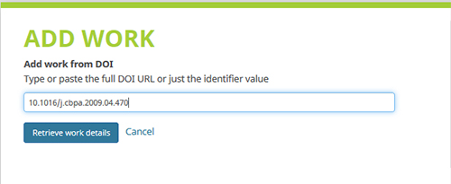
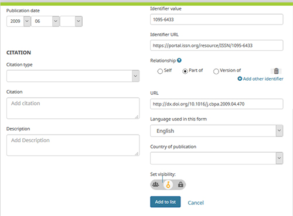
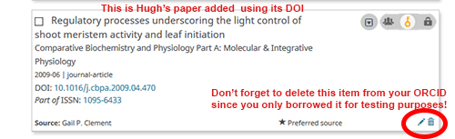
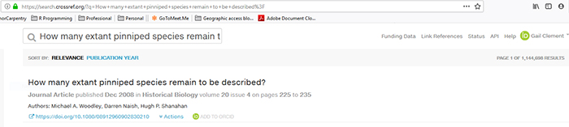

output: html_document: default
45 Minutes
In the ‘Works’ section of the ORCID profile, click on the Tab ‘+ Add Works’. Select the option ‘Add DOI’. A dialog box will display for ‘ADD WORK’. In the blank text box, enter the DOI for the work you wish to add. The illustration below shows how to add a paper from Hugh Shanahan’s ORCID profile, using the DOI 10.1016/j.cbpa.2009.04.470 but you are encouraged to add a DOI for your own work instead!

Click on the blue button ‘Retrieve work details’ and a metadata form will display with details populated from the DOI record. Leave the form as is; scroll to the bottom to set the privacy to ‘Trusted’, and click ‘Add to list’.

Back in your ORCID profile, refresh the ‘Works’ section by clicking on the ‘Sort’ button and select ‘Title’. Now look on the screen to make sure the work you just added displays.
The illustration below shows the displayed version of Hugh Shanahan’s work associated with 10.1016/j.cbpa.2009.04.470.

In the ‘Works’ section of the ORCID profile, click on the Tab ‘+ Add Works’. Select the option ‘Search & link; a long list of searchable databases will display. Scroll to the link for “CrossRef Metadata Search”.
The link takes you to the database for the CrossRef DOI Registration agency, while you are still logged into your ORCID account (see your name and the ORCID logo in the top right corner of the screen). Most publishers use CrossRef to register DOIs for their articles, book chapters, and proceedings.
In the search box at the top of the screen, enter the title for a work you wish to add to your ORCID. If you are following along using Hugh Shanahan’s work as a test, enter the title for one of his journal articles, as illustrated below.

Note that in the bottom right corner of the CrossRef record appears a little ORCID logo next to ‘ADD TO ORCID’. Click this link to copy the record into your ORCID profile. You will be prompted to confirm that you wish to add this record to ORCID; click ‘YES’.

Let’s discuss the pros and cons of uploading citations from BiBTeX files vs. relying on the ORCID wizards.
Previous: Getting Started with ORCID Next: ORCID Benefits